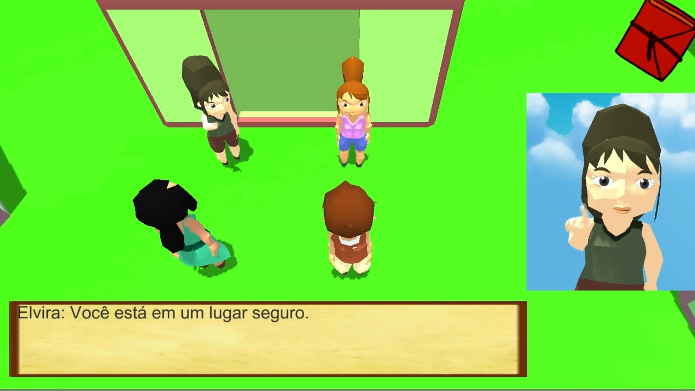

2015
Libra

Ana Paula Uehara - Arte 2D, Arte 3D, Animação 3D;
Gabriel Moraes - Programação;
Marcos Antonio - Arte 3D, Animação 3D, Game Design;
Murilo Romera - Programação, Sound Design.
Jogo desenvolvido como Trabalho de Conclusão de Curso para a FATEC
São Caetano do Sul. O jogo tinha como proposta ensinar o básico de
Libras para o jogador, mostrando situações de sobrevivência básicas.